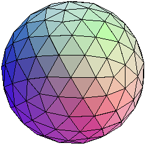

Una forma de organizarse
De 1 a 8 personas, con las responsabilidades distribuidas y un nombre para el proyecto.
Semestre 2027-1 · Grupo 1746 · Licenciatura en Negocios Internacionales
Seminario de Negocios Internacionales III

Ningún nodo se sostiene solo. Una tecnología se apoya en materiales, energía, dinero, leyes y trabajo. Mueve uno y se mueven todos.
Bitácora del seminario
Arriba está lo que toca ahora. Toca cualquier parada de la línea para volver a una sesión anterior: nada se borra, todo sigue aquí.
Sesión 08 · Martes 13 de octubre · Salón C-102
Una hora para organizarse, elegir tema y escribir una primera pregunta de investigación. Puedes trabajar individualmente o en equipo de hasta 8 personas.
El trabajo de investigación del semestre
De forma individual o en equipo de hasta 8 personas, vas a estudiar una innovación en un sector concreto: qué es, de dónde viene, quién la produce, qué efectos tiene y qué le conviene hacer a una empresa frente a ella. El trabajo final puede ser una wiki, un policy memo, un video, un podcast, un ensayo u otro formato que permita comunicar la investigación. Vale 20% de tu calificación y presentarlo es obligatorio para acreditar.
Al final de esta página encontrarás qué es cada formato y cómo puede servir para tu investigación.
Al terminar esta hora tu equipo tiene
De 1 a 8 personas, con las responsabilidades distribuidas y un nombre para el proyecto.
Una innovación y un sector, nombrados con precisión y que les interesen a todos.
Escrita, recortada y lista para cambiar cuando empiecen a leer.
«Cuanto más se restringe el campo mejor se trabaja y se va más seguro.»
Eco escribió este manual en 1977 para estudiantes que tenían que hacer su tesis. Casi todo lo que dice sirve igual para un trabajo de equipo de un semestre: escoger un tema que sí se pueda hacer, recortarlo y convertirlo en pregunta. Las citas de esta hora salen de ahí, con su página.
La hora, en cinco pasos
Cada paso deja algo escrito en la tarjeta del equipo. Al final de la hora la tarjeta está completa y lista para subirla.
Paso 01 · 10 minutos
De 1 a 8 personas: puedes trabajar individualmente o formar un equipo de hasta 8. Si trabajan en equipo, júntense por lo que les interesa: van a pasar dos meses con esa gente y con ese tema.
Ahí están los 39 radares de la primera sesión encimados en un solo mapa. Ubica el tuyo y mira quién apunta a la misma tecnología o al mismo sector que tú.
Abrir el radar del grupo →
Cinco roles
Lleva el calendario, reparte tareas y cuida que el equipo no se desvíe de la pregunta.
Busca lo que ya se escribió: informes, artículos, libros, notas de prensa. Arma las fichas de cada fuente.
Consigue las cifras con su fuente —INEGI, Secretaría de Economía, Banxico, UNCTAD, OMPI— y arma las tablas.
Busca lo que contradice la respuesta del equipo. Si lo encuentra antes que el grupo, les ahorra el mal rato en la exposición.
Escribe la tarjeta de hoy y coordina la redacción o el guion del trabajo final, según el formato elegido. Cuida que se entienda a la primera.
Son cinco funciones, no cinco puestos obligatorios. Si trabajas individualmente, cubres las cinco. Si son de 2 a 4, cada quien puede asumir más de un rol; si son de 5 a 8, pueden repartirlos y compartir funciones, por ejemplo evidencia o datos. Todos leen y en la exposición participan todos. En esta página, «equipo» y «tarjeta del equipo» también incluyen a quien trabaja individualmente.
En la tarjetanombre del equipo, integrantes y roles →Paso 02 · 10 minutos
El trabajo pide dos cosas juntas: una innovación concreta y el sector donde la van a seguir. «Inteligencia artificial» no es un campo; «inteligencia artificial generativa en los Call Centers bilingües» ya empieza a serlo.
Ronda de un minuto
Qué tecnología te da curiosidad, entusiasmo o desconfianza, y por qué. Anoten todo sin discutir todavía. Después busquen dónde se cruzan dos o tres intereses: ese cruce suele ser el tema. Si trabajas individualmente, anota tus intereses y elige cuál quieres seguir.
El punto ciego del grupo
En el radar de la primera sesión, 32 de 39 apuntaron a la inteligencia artificial. Pero 32 de los 37 objetos que traen todos los días son aparatos hechos de aluminio, vidrio, litio, cobre, coltán y silicio, y ese sector —electrónica, química, manufactura— lo siguen 3 de 39. Si quieren un tema que pocos equipos van a tomar, ahí hay uno.
Ideas para arrancar · una innovación × un sector
Para nombrar el sector con precisión, búsquenlo en la Clasificación Industrial Internacional Uniforme (CIIU), páginas 43 a 60, y quédense con una clase: no «tecnología», sino «2610 · Fabricación de componentes y tableros electrónicos» (p. 49).
Eco las llama «obvias» y advierte que hay tesis «dramáticamente abortadas precisamente por no haber sabido plantear el problema inicial en estos términos tan obvios» (p. 26). Pasen su campo por las cuatro.
«Que el tema corresponda a los intereses» de quien lo hace: a lo que lee, a su mundo (p. 25). Si trabajan en equipo, debe interesarles a todos, no solo a quien lo propuso.
Que estén «al alcance físico» (p. 25): en línea, en la biblioteca, de aquí a diciembre. Si los datos cuestan una suscripción de miles de dólares, no están a su alcance.
Que estén «al alcance cultural» (p. 25): en un idioma y con un nivel técnico que dominen. Un manual de ingeniería de semiconductores en coreano no cuenta.
Que «el cuadro metodológico de la investigación esté al alcance» (p. 25). Si la pregunta solo se contesta con una encuesta nacional, no es su pregunta.
«el que quiera hacer una tesis, debe hacer una tesis que esté capacitado para hacer.» Eco · p. 26
En la tarjetala innovación, el sector y las cuatro reglas →Paso 03 · 10 minutos
«La primera tentación del estudiante es hacer una tesis que hable de muchas cosas» (Eco, p. 27). El remedio es recortar hasta que el tema quepa en lo que pueden leer de aquí a diciembre.
El ejemplo de Eco
«Pues bien, yo aconsejaría el último tema. Con la condición de que, llegados a este punto, el aspirante diga todo lo que haya que decir sobre ese maldito volcán.» p. 29
El mismo camino, con un tema del seminario
En el último peldaño ya pueden hacer la lista completa, buscar cada anuncio y comprobar qué pasó con él. En el primero no pueden ni empezar.
Eco estudia las radios libres que brotaban en Italia a mediados de los setenta —sí, otra vez la radio— y antes que nada pide «definir con exactitud el ámbito geográfico y temporal» (p. 58). Agreguen a quiénes van a mirar.
Un país, una región, una ciudad, un corredor. «México y Estados Unidos» ya es un recorte; «el mundo» no.
De 2020 a 2025, desde la reforma hasta hoy. En tecnología lo que pasa rápido envejece rápido: fijen la fecha de corte.
Qué empresas, qué gobiernos, qué usuarios. Si eligen un grupo, el grupo entero: «si decido examinar sólo las radios milanesas, sean las radios milanesas, pero todas» (p. 58).
La palabra clave
Eco se detiene en qué es una «radio libre»: «¿Entiendo por radio libre sólo una radio de izquierda? ¿O una radio hecha por un grupo pequeño en situación semi-legal y en territorio nacional? ¿O una radio no dependiente del monopolio estatal […]?» (p. 59). Con las palabras grandes del seminario pasa igual: fintech, nearshoring, startup o inteligencia artificial cambian de sentido según quién las usa. Escriban qué entienden ustedes y qué dejan fuera. Para «innovación» ya tienen una definición: la del Manual de Oslo.
Por ejemploCuando decimos fintech nos referimos a empresas que prestan dinero o procesan pagos desde una aplicación sin ser bancos. Dejamos fuera las aplicaciones de los bancos.
Paso 04 · 20 minutos
El recorte todavía es un tema. Se vuelve investigación cuando lo escriben como pregunta: entonces saben qué buscar, qué les sobra y cuándo terminaron.
Un título se vuelve pregunta
En julio de 1948 balearon a Palmiro Togliatti, dirigente del Partido Comunista Italiano, y el país estuvo a punto de estallar. Días después, Gino Bartali ganó el Tour de Francia. Eco imagina una tesis sobre eso con tres títulos distintos (pp. 138–139):
«El atentado de Togliatti y la radio»
«Análisis de contenido con vistas a mostrar la utilización de la victoria de Gino Bartali en el Tour de France a fin de distraer la atención de la opinión pública del hecho político acaecido»
«¿se ha hecho en la radio un uso específico de la victoria de Gino Bartali que llegue a evidenciar el proyecto de distraer la atención del público del atentado sufrido por Togliatti?»
El título público cabe en una portada. La pregunta dice qué van a escuchar, qué van a contar y qué tendría que aparecer para responder que sí. «Ya se ve que el “título” (transformado en pregunta) se convierte en parte esencial del plan de trabajo» p. 139
Para Eco un trabajo es científico, con fórmulas o sin ellas, si cumple cuatro requisitos (pp. 48–52). Háganselos a su pregunta.
El objeto tiene que estar «definido de tal modo que también sea reconocible por los demás» (p. 48). Si otro equipo no puede decir qué cae dentro y qué fuera, falta definir.
Demostrar otra vez el teorema de Pitágoras «no añadiría nada a nuestro conocimiento» (p. 49). Tampoco sirve preguntar lo que se adivina: Eco recuerda a un alumno que llamó «encuesta» a lo que le contaron una docena de relojeros en dos viajes en tren, con resultados «perfectamente imaginables sin necesidad de hacer la encuesta» (p. 56).
La investigación «tiene que ser útil a los demás» (p. 50). En este trabajo, ese alguien es una empresa del sector que tiene que decidir qué hacer frente a la innovación.
Quien quiera probar que hay centauros en el Peloponeso tiene que decir «qué tipo de hueso (u otro hallazgo) mandaría al cuerno mi hipótesis el día que fuera encontrado» (pp. 51–52). Si no saben qué los haría cambiar de idea, todavía no tienen pregunta.
Seis preguntas flojas. Antes de voltear cada una, discútanla un minuto: ¿qué prueba no pasa y cómo la arreglarían?
Para las radios libres Eco distingue tres fuentes (pp. 61–63). Con otros nombres, son las suyas.
«Son siempre los más seguros» (p. 61). INEGI, Secretaría de Economía, Banxico, CNBV, UNCTAD, OMPI, OCDE.
Que una empresa lo diga no prueba que sea cierto, pero «el hecho de que el que emite haga tal presentación pública es un dato objetivo» (p. 62).
Eco pide escuchar una radio una semana entera, hora por hora, con «magnetofón y lápiz» (pp. 62–63). Ustedes pueden seguir precios, anuncios, vacantes o aplicaciones igual: siempre lo mismo, a la misma hora, por escrito.
«Tres opiniones hacen sólo un artículo de periódico, cien opiniones hacen una encuesta.» Eco · p. 65
En la tarjetala pregunta, lo que sospechan, el dato que los haría cambiar de idea y dónde van a buscar →Paso 05 · 10 minutos
Una sola por trabajo, individual o en equipo, en un solo teléfono o computadora: lo que escriban se queda guardado en ese aparato. Antes de salir, cópienla.
Lean su tarjeta al equipo de al lado. Ellos les hacen dos preguntas: ¿de qué hablan exactamente? y ¿qué dato los haría cambiar de idea? Si no pueden contestar, ajusten la tarjeta. Luego cambian los papeles.
Copien la tarjeta y súbanla al espacio del trabajo en Moodle. Es el punto de partida de su investigación, cualquiera que sea el formato de la entrega final.
Después de hoy
Y está bien. La de hoy es tentativa: sirve para saber qué leer primero. Cuando empiecen a leer la van a afinar, y quizá a cambiar de rumbo.
El viaje en coche
Eco compara el plan de trabajo con un viaje de mil kilómetros en una semana: nadie sale de casa a ciegas. Se sale con una ruta, y si Siena toma más tiempo del previsto se cancela Montecassino. «Pero el que habéis modificado es ese trayecto, no ningún trayecto» (p. 138).
Si no cambia, algo falló
«El índice y la introducción finales […] serán diferentes de los iniciales. Es lo normal. Si no fuera así, significaría que toda la investigación efectuada no os ha proporcionado ninguna idea nueva» (p. 141).
Hoy
La tarjeta del trabajo individual o en equipo, entregada en Moodle.
Primera revisión
La pregunta principal afinada y dos secundarias como máximo, una hipótesis provisional, las fuentes reunidas con su ficha completa y una imagen que identifique al equipo.
1 y 8 de diciembre
El trabajo terminado en el formato elegido —wiki, policy memo, video, podcast, ensayo u otro— y una exposición de 15 minutos apoyada en ese material. Si trabajan en equipo, participan todos.
Lo primero que sigue es buscar qué se ha escrito ya sobre su tema. Eco lo pone antes que el índice y que la introducción: «Lo primero es la inspección bibliográfica» (p. 142).
Fuentes
Elige cómo comunicar tu investigación
Elijan el formato que mejor permita responder su pregunta y llegar a su público. En todos, la base es la misma: una pregunta delimitada, evidencia con fuentes identificables, análisis y una conclusión propia.
Un conjunto de páginas conectadas por enlaces y editables por sus autores. Permite organizar el tema en secciones —antecedentes, actores, datos, análisis y conclusiones— e integrar texto, imágenes, tablas y referencias. Los enlaces ayudan al lector a explorar las relaciones entre las partes.
Un memorando breve dirigido a alguien que debe decidir, por ejemplo una autoridad pública o la dirección de una empresa. Define un problema, compara opciones con evidencia y recomienda una acción. Explica por qué conviene esa opción, cómo podría aplicarse y qué costos, riesgos o límites tiene.
Una pieza audiovisual que responde la pregunta mediante un guion, narración, imágenes, gráficos o entrevistas. Puede tomar la forma de un documental breve o de una explicación visual. El montaje debe desarrollar el análisis; los datos, testimonios y materiales utilizados llevan sus créditos y fuentes.
Un episodio de audio organizado con un guion. Puede combinar narración, conversación y entrevistas para presentar el problema, contrastar evidencia y llegar a una conclusión. Mencionen las fuentes al hablar y reúnan las referencias completas en las notas del episodio para que se puedan consultar.
Un texto que sostiene una tesis: la respuesta que proponen a su pregunta. Desarrolla argumentos apoyados en fuentes, considera objeciones y cierra con una conclusión. Puede ser un documento escrito o un ensayo interactivo con enlaces, gráficos y otros recursos que ayuden a seguir el razonamiento.
Un documento organizado por pregunta, método, resultados y conclusiones. Explica qué fuentes o datos utilizaron, cómo los analizaron y qué encontraron. Sirve para presentar comparaciones, tablas y hallazgos de manera que otra persona pueda revisar el procedimiento y sus límites.
También pueden proponer otro formato o combinar varios. Lo central es que se entienda qué investigaron, cómo lo sostienen y qué concluyen; el formato debe ayudar a comunicar ese trabajo. Estas opciones valen tanto para el trabajo individual como para equipos de hasta 8 personas.
Sesión 07 · Martes 6 de octubre · Auditorio Echenique García
Este martes no nos vemos en el C-102. Para la XXXII Semana Académica Interdisciplinaria, la Academia de Negocios Internacionales asignó a nuestro grupo una de sus conferencias. Esa es nuestra sesión de esta semana: nos vemos directamente en el auditorio.
🎓 Semana Académica 16:00—18:00 Fuera del salón
Martes 6 de octubre, de 16:00 a 18:00. Compartimos el auditorio con el grupo 1546, así que llega unos minutos antes para encontrar lugar.
Astrik Yován Rodríguez Borys, Erika Gómez Adán y Saraí Medina García ya terminaron la licenciatura que estás cursando.
Es la oportunidad de preguntarles a quienes ya pasaron por la carrera qué les sirvió y qué tuvieron que aprender por fuera.
Sesión 06 · Martes 29 de septiembre · Salón C-102
Llevamos cinco sesiones hablando de tecnologías, y todas tienen algo en común: se enchufan en algún lado. El martes vamos al otro extremo del cable con el Ing. Ulises Matus Acuña, que lleva más de trece años en el sector energético, casi todos siguiendo el gas natural que cruza la frontera entre Estados Unidos y México. Lo ha visto desde el regulador, desde el operador de los ductos, desde un gobierno estatal y desde una mesa de comercialización.
🔥 Sesión con invitado 16:00—19:00 📊 Con resumen
Lo que trajo
Ulises Matus presentó El impacto de los conflictos globales en los mercados energéticos globales y de México, con datos al 28 de septiembre de 2026. Siguió tres conflictos —Rusia–Ucrania desde febrero de 2022, Israel–Palestina y el Mar Rojo desde octubre de 2023, y la guerra de Irán desde febrero de 2026— y terminó en lo que significan para México. Las cifras son las de su presentación, que cruza datos de la AIE, la EIA, la OPEP, Pemex y la Comisión Europea.
Y México
Sus cuatro conclusiones
Quién viene el martes
Ingeniero civil por la UNAM, con maestría en Ingeniería en Energía por la misma universidad. Tiene más de trece años en el sector energético, enfocado en el mercado de gas natural en México y Estados Unidos, y ha trabajado lo mismo en el sector público que en el privado.
Empezó en la entonces Comisión Reguladora de Energía, revisando las tarifas de transporte y distribución de hidrocarburos y de electricidad: lo que cuesta mover la energía, no solo producirla. Pasó después al Centro Nacional de Control del Gas Natural (CENAGAS), donde coordinó la contabilidad de transporte del Sistema de Transporte y Almacenamiento Nacional Integrado, el SISTRANGAS. Más adelante participó en la creación de la Agencia de Energía del Estado de Puebla, una institución que ayudó a construir desde cero.
En los últimos años trabajó en Trafigura México, en la comercialización de gas natural entre Estados Unidos y México: comprar de un lado de la frontera y vender del otro.
Hoy desarrolla Ámbar Intelligence, una plataforma propia de inteligencia de mercado para los sectores de gas natural y electricidad en México, que integra y analiza información operativa para que quienes participan en ese mercado decidan mejor.
Para la parte de preguntas
Pocas veces vas a tener enfrente a alguien que ha visto el mismo mercado desde cuatro sillas distintas. Si no se te ocurre nada en el momento, toma cualquiera de estas.
Buena parte del gas que usa México llega por ducto desde Estados Unidos. ¿Qué tan expuestos estamos y qué se puede hacer?
Del pozo en Texas a la planta en México: qué parte es la molécula, qué parte el transporte y qué parte la fija un regulador.
32 de los 39 radares del grupo apuntaban a ella. Los centros de datos que quieren venir a México, ¿encuentran la energía que necesitan?
Montó una empresa de inteligencia de mercado: qué información se publica, cuál hay que construir y cómo se vuelve un negocio.
Comprar gas en un país y venderlo en otro es comercio exterior. ¿Qué hay que saber para sentarse en una mesa de comercialización?
No hay lectura previa. Llega con una pregunta para él y, si quieres un punto de partida, vuelve a tu radar de la sesión 01: la tecnología que elegiste, ¿de qué energía vive y de dónde viene?
Lo que preguntes y lo que comentes cuenta como participación, y la participación es el 30% de tu calificación. Si prefieres escribirlo, el foro de Moodle sirve igual.
Sesión 05 · Martes 22 de septiembre · Salón C-102
Volvemos después de una semana sin clase con una pregunta: ¿qué pasa cuando una empresa mete una tecnología nueva y le sale otra cosa? Pfaffenberger y Baba lo estudiaron en oficinas, talleres y patrullas. Edward Tenner lo cuenta con botes salvavidas y bacterias. Robert K. Merton le puso nombre en 1936.
🎬 Con video 16:00—19:00 Con lectura previa
„Ein Teil von jener Kraft,
Die stets das Böse will und stets das Gute schafft.“«Una parte de aquella fuerza que siempre quiere el mal y siempre obra el bien».
¿Y «El infierno está plagado de buenas intenciones»? No está en el Fausto. Es un refrán viejo, «el camino al infierno está empedrado de buenas intenciones»: suele atribuirse a Bernardo de Claraval, en el siglo XII, y James Boswell lo pone en boca de Samuel Johnson en una conversación de 1775 (Boswell, 1791). Quien lo junta con Mefistófeles es Marshall Berman, en Todo lo sólido se desvanece en el aire, y lo hace dándole la vuelta. Al comentar estos versos escribe: «The road to heaven is paved with bad intentions», «el camino al cielo está empedrado de malas intenciones» (Berman, 1982, p. 48).
En la nota al pie de esa página, Berman remite a Georg Lukács, para quien esta dialéctica del bien y del mal la vieron primero los observadores más agudos del capitalismo, sobre todo Bernard de Mandeville: en La fábula de las abejas (1714), los vicios privados, si todos los persiguen, producen virtudes públicas (Lukács, como se cita en Berman, 1982, p. 48). El refrán habla de buenas intenciones que terminan mal; Mefistófeles y Berman, de malas intenciones que terminan bien. En los dos casos la intención no decide el resultado, y de eso se trata la sesión de hoy.
La lectura de hoy
Son los capítulos VIII y IX de Innovación tecnológica y procesos culturales, coordinado por María Josefa Santos y Rodrigo Díaz Cruz (Fondo de Cultura Económica). El control de lectura se entregaba hoy a las 16:00 en la Actividad 2 de Moodle.
La gerencia instala tecnología para controlar, la gente la tuerce para defenderse, y el resultado no lo decide ninguno de los dos.
Miles de millones invertidos en TI que no rinden, porque los procesos son fenómenos sociales.
La idea que los une«La meta del cambio de procesos no es simplemente la integración (que puede lograrse mediante la tecnología), sino la cooperación (que puede lograrse únicamente a través de las personas)» (Baba et al., 2016, «Conclusión»).
El video de la sesión
Tenner es historiador de la tecnología y autor de Why Things Bite Back (1996), un libro entero sobre cómo la técnica se vuelve contra quien la usa. En esta charla da un giro: las consecuencias no deseadas no solo castigan, también son el motor del progreso.
Del video a la lectura
Agregar botes sin revisar la estabilidad del barco hundió al Eastland. La corporación del caso uno de Baba hizo lo mismo en tierra: como las divisiones no querían cambiar sus procesos, repartió herramientas comunes de diseño y esperó que la tecnología las uniera.
En la lecturaSin cambio «en el componente no tecnológico de la empresa», la inversión en TI apenas optimiza «las suboperaciones individuales». La salida que proponen es la optimización conjunta de lo técnico y lo social.
El sistema de rastreo de patrullas de St. Louis era técnicamente impecable. Lo mató un puente: un policía descubrió que ahí perdía la señal y en poco tiempo todos lo sabían.
En la lecturaPfaffenberger: el resultado de un drama tecnológico «es inherentemente difícil y quizás imposible de predecir», porque los usuarios «modifican, alteran e incluso destruyen la tecnología a su conveniencia».
Las farmacéuticas llevaban años trabajando cada una por su lado. Lo que escaló la penicilina no fue un invento nuevo: fue que, en plena emergencia, aceptaron compartir lo que sabían.
En la lecturaPara Baba, la confianza «no es un hecho, es una ventaja competitiva que difícilmente se gana». Y añade que sabemos cooperar en la crisis, aunque no está claro que sepamos «mantener el trabajo en equipo cuando pasa la crisis».
Twain sabía todo sobre tipografía y aun así se arruinó con una máquina que hacía «todo lo que hacía un ser humano». Lo sedujo la máquina, no el negocio.
En la lecturaBaba describe la tecnología como «bala de plata» y como fin en sí misma: «símbolo de poder, riqueza y status», hasta «juguete» para adultos. Se ve a la tecnología como imán de riesgos, «pero no una fuente de riesgos».
Quién fue
Robert King Merton es uno de los sociólogos más influyentes del siglo XX. Nació en el sur de Filadelfia como Meyer R. Schkolnick, hijo de inmigrantes judíos de Europa del Este. De adolescente hacía trucos de magia con el nombre artístico de Robert Merlin, que luego ajustó a Merton. Estudió en Temple University, se doctoró en Harvard en 1936 y enseñó en Columbia casi cuatro décadas.
Su tesis doctoral, Science, Technology and Society in Seventeenth-Century England (1938), es uno de los textos fundadores de la sociología de la ciencia, la tradición de la que salen los capítulos de hoy. Le debemos palabras que usamos sin saber de quién son: profecía autocumplida, modelo a seguir (role model), funciones manifiestas y latentes, teorías de alcance medio, efecto Mateo y la entrevista focalizada de la que vienen los focus groups de cualquier área de mercadotecnia.
En 1994 fue el primer sociólogo en recibir la Medalla Nacional de Ciencia de Estados Unidos. Su hijo, Robert C. Merton, ganó el Nobel de Economía en 1997.
Cómo introdujo la noción
Con 26 años, Merton publicó en el primer volumen de la American Sociological Review «The Unanticipated Consequences of Purposive Social Action» («Las consecuencias no anticipadas de la acción social intencional»). Su punto de partida: el problema es viejo, casi todo pensador social lo había rozado con distintos nombres, pero nadie lo había tratado de forma sistemática.
Merton escribió unanticipated: no previstas. La fórmula unintended consequences, no deseadas o no buscadas, es la que se popularizó después. Se usan como sinónimos, pero no lo son: una consecuencia puede preverse y no desearse. Y ninguna de las dos es por fuerza mala, como insiste Tenner.
En 1948 formuló el caso de la profecía que se cumple a sí misma. En Social Theory and Social Structure (1949) convirtió la idea en la distinción entre funciones manifiestas, buscadas y reconocidas, y funciones latentes, ni buscadas ni reconocidas.
Las cinco fuentes de lo imprevisto, según Merton, y dónde aparecen en la lectura
Tres mitos griegos
Tenner dice que en el mundo antiguo había «mucho respeto por las consecuencias no deseadas» y nombra a Pandora y a Prometeo. El tercero, Sísifo, es para lo que viene después de la innovación. Los tres son lecciones de TED-Ed con subtítulos en español.
Con la sesiónUna sola innovación, el fuego, con dos consecuencias que nadie eligió por separado. Y los dos hermanos son la brecha de Tenner: la capacidad corre, la previsión llega después.
Con la lecturaPfaffenberger cierra con algo parecido: mientras discutimos lo visible de la TI, la capacidad de rastrear a cada persona «se está difundiendo inadvertidamente». Lo que sale de la caja no vuelve a entrar; el correo que «borras» queda registrado.
Con la lecturaPara Pfaffenberger, los dramas tecnológicos rara vez terminan en cambio radical: lo común es la reintegración, en la que «los sistemas de control se restablecen». Baba: el cambio cultural «no será, no puede ser, fácil o rápido». El capítulo X del mismo libro se llama «El mito de Sísifo».
Para la discusión
Cada una junta el video con la lectura. Toma la que te mueva y llega con un caso tuyo: una empresa donde trabajaste, un trámite, una app que usas.
El localizador de St. Louis fracasó por un truco de los policías. Con las cinco fuentes de Merton en la mano, ¿cuál lo explica mejor: ignorancia, error o interés inmediato?
Los botes del Eastland, el bactericida que descompuso las cintas de IBM, el CAD/CAM que nadie usó. ¿Qué tienen en común? ¿Qué te dice «es una cuestión del sistema»?
Los ingenieros creían que los programadores no sabían, les quitaron el trabajo difícil y los programadores nunca aprendieron. ¿Dónde has visto ese círculo en una organización?
Si la capacidad crece más rápido que la previsión, ¿quién debería encargarse de prever: el área de tecnología, la dirección, los usuarios, el gobierno? ¿Alguien lo hace hoy con la inteligencia artificial?
Las mecanógrafas que oprimían la barra espaciadora, los operarios que se hacían claves propias. Pfaffenberger dice que mucho ajuste busca servir mejor al cliente. ¿Dónde está la línea?
Baba habla de la fe estadunidense en la tecnología y del individualismo. Si la empresa estuviera en México, ¿qué valores de la cultura nacional pesarían al instalar una tecnología nueva?
Tenner insiste en las consecuencias buenas: la penicilina, la fotocopiadora, la inversión en valor. Busca un caso de una crisis o un error que terminó en innovación en tu entorno.
Si los dramas tecnológicos casi siempre terminan en reintegración, ¿cambia algo de fondo cuando una empresa «se transforma»? ¿Qué haría falta para que la roca se quede arriba?
Para seguir viendo
Salen de la playlist del seminario. Dos mitos más, uno que lleva los mitos a la inteligencia artificial y tres casos en que la consecuencia no prevista ya tiene nombre propio.
Con la lecturaTalos es un «delegado» en el sentido de Pfaffenberger: un artefacto que hace cumplir la regla sin nadie que vigile. Medea hace contradelegación, como los policías que apagaban el motor en el puente.
Con la lecturaEl inventor al servicio del palacio es la técnica como instrumento de quien manda, la regularización de Pfaffenberger. Y «volar en medio» es un manual de uso que el usuario no siguió.
Con la lecturaUne los mitos de hoy con la inteligencia artificial. Y lleva a Baba: que «la tecnología sustituye a la gente» es un axioma cultural con historia, no un hecho técnico.
Con la sesiónLa propia descripción del video lo llama una «peligrosa consecuencia no deseada» de personalizar: relevancia buscada, aislamiento no buscado. Volvemos a esto en la sesión 13.
Con la lecturaBaba lo diría así: la tecnología está «considerablemente limitada por la cultura». Y es un caso raro: un inventor que en 1997 ya veía venir una consecuencia no deseada que hoy discutimos a diario.
Con la lecturaEs el caso de Baba en 2025: una cultura corporativa formada por éxitos pasados decide cómo se recibe una tecnología nueva. ¿Apple se parece al proveedor A o al B?
Lo que viene
Tenemos dos visitas en puerta, y una de ellas llega desde Colombia.
Con el Ing. Ulises Matus, que estará con nosotros en el salón, en el horario de siempre.
Con la Ing. Deisy Carmona, que nos acompaña a distancia desde Medellín, Colombia.
Sesión 04 · Martes 8 de septiembre · Salón C-102
Llevamos tres sesiones preguntando quién decide una innovación y quién la paga. El martes seguimos el recorrido del dinero con la Lic. Yixili Ruiz Mendoza, Senior Specialist en Fusiones y Adquisiciones (M&A) en Bain & Company. Su experiencia conecta las decisiones de inversión y localización empresarial con la estrategia de adquisición, la integración post-fusión y las joint ventures.
🧭 Sesión con invitada 16:00—19:00 Con lectura previa
Lo mandó ella para que lleguemos con un antecedente. Es un informe breve de Bain & Company (29 de junio de 2026, en inglés): el mercado mundial de fusiones y adquisiciones creció 41% en los primeros cinco meses del año y va camino al segundo más alto de la historia, con 74 operaciones de más de diez mil millones de dólares desde enero de 2025.
La paradoja del título es la de quien va ganando: cómo seguir comprando empresas a ese ritmo mientras te reconstruyes por dentro para la inteligencia artificial.
Abrir el reporte ↗
Quién viene el martes
Licenciada en Negocios Internacionales por la Universidad Nacional Autónoma de México (UNAM), con experiencia académica internacional en la Georg-August-Universität Göttingen, Alemania, donde profundizó en el estudio de flujos de inversión, política económica y desarrollo. Cuenta también con experiencia docente como profesora adjunta en la FCA-UNAM.
Se desempeñó durante dos años en CBRE como analista de inversiones y site location strategy para México y Latinoamérica, participando en proyectos relacionados con decisiones de inversión y estrategias de localización empresarial en la región.
Actualmente forma parte de Bain & Company, firma global de consultoría estratégica, donde se desempeña como Senior Specialist en Fusiones y Adquisiciones (M&A por sus siglas en inglés), trabajando en temas de estrategia de adquisición, integración post-fusión y joint ventures.
Su experiencia combina negocios internacionales y estrategia corporativa con el uso de tecnología, analítica e inteligencia artificial como herramientas para la investigación, la resolución de problemas y la toma de decisiones estratégicas.
Para la parte de preguntas
La sesión se arma con lo que preguntes. Si no se te ocurre nada en el momento, toma cualquiera de estas.
Cuando dos ciudades compiten por el mismo proyecto: ¿el suelo, la energía, la gente, los impuestos, la seguridad?
La ola de fusiones que describe Bain, ¿llega a México o nos toca de rebote?
Cómo se arma un análisis cuando la cifra que necesitas no está publicada en ninguna parte.
Estudiaste lo mismo que nosotros: qué te sirvió de la licenciatura y qué tuviste que aprender por fuera.
El reporte leído, dos cifras que te hayan sorprendido y una pregunta escrita para ella. Con eso alcanza.
Lo que preguntes y lo que comentes cuenta como participación, y la participación es el 30% de tu calificación. Si prefieres escribirlo, el foro de Moodle sirve igual.
Sesión 03 · Martes 1 de septiembre · Salón C-102
Llevamos dos sesiones preguntando quién decide una innovación y quién la paga. Hoy viene alguien que aparece cuando esa innovación se rompe: el Ing. Juan Esteban Castellanos, director del centro de operaciones de seguridad de Intelligent Networks. Trae las dos mitades del asunto: el panorama —cuánto cuesta una brecha, dónde está parado México— y el oficio, que es cómo se ve por dentro el trabajo de defender una empresa.
🛡 Sesión con invitado 16:00—19:00
Quién viene hoy
Dirige el SOC de Intelligent Networks: el equipo que vigila las redes de otras empresas las veinticuatro horas y entra cuando algo truena. Un centro de operaciones de seguridad es eso, gente de guardia frente a pantallas, no un programa que se instala.
Su ruta no empezó en una computadora. Empezó en campo, diseñando operaciones para Halliburton en Veracruz, Tabasco, Campeche y Tamaulipas, y calculando sistemas industriales de aire comprimido y automatización. De ahí viene lo que lo hace raro: trabaja las dos mitades del problema, la de las tecnologías de la información —correo, nube, bases de datos— y la de las tecnologías de operación, que son los PLC y los SCADA que mueven una planta. Esa segunda mitad es la que detiene una línea de producción cuando la atacan.
Antes dirigió el SOC de S2Grupo en la Ciudad de México y el equipo de respuesta a incidentes de Intelligent Networks, y trabajó en preventa de ciberseguridad en A3Sec. También da clases de Redes y creatividad y de Matemáticas creativas en el Centro de Diseño, Cine y Televisión.
Para la parte de preguntas
Se queda al final para quien quiera hablar de prácticas o de rutas de carrera. Si no se te ocurre nada en el momento, toma cualquiera de estas.
Cuando entrevistas para el SOC, ¿qué buscas y qué te hace decir que no?
¿Hay carril que no pase por la consola: gobierno, riesgo de terceros, cumplimiento, crisis?
¿Quién decide si se paga el rescate, y con qué información sobre la mesa?
Del lado de quien ataca y del lado de quien defiende. ¿Cuál de los dos ganó más?
En la sesión 01, treinta y dos de los treinta y nueve radares del grupo apuntaban a la inteligencia artificial. Hoy le apareció un costado que no estaba en ninguno: quién la ataca, quién la defiende y quién paga la cuenta cuando falla.
Si algo de lo de hoy te movió, escríbelo en el foro o en el glosario de Moodle. Cuenta como participación, y es el 30% de tu calificación.
Sesión 02 · Martes 25 de agosto · Salón C-102
Le buscamos autor a cuatro cosas que usas todos los días —el auto eléctrico, el smartphone, la inteligencia artificial y la radio— y no lo encontramos. Antes hubo que ponernos de acuerdo en qué estábamos buscando: la definición del Manual de Oslo y sus tres exigencias.
Las cuarenta y dos láminas de la sesión, con las páginas del Manual de Oslo que leímos, la cadena de la radio de 1873 a 1920 y la lista de los 50 avances de The Atlantic para descargar.
Abrir la presentación →
El concepto que quedó
Una misma innovación cambia de forma según el lente que le pongas. Los dos lentes siguen abiertos el resto del semestre: vuelve a ellos cada vez que analices un caso.
Mira la cosa: qué hace, cuánto cuesta, quién la vende.
Mira la red: quién decide, quién trabaja, quién paga la cuenta.
En Moodle está la Actividad 1: los capítulos 2 y 3 del Manual de Oslo (OCDE y Eurostat, 2018), el instructivo con el que los países miden oficialmente la innovación. Cuando leas que «México innova menos que Corea», alguien aplicó este manual para poder decirlo.
El control de lectura pedía una página con una cita en formato APA 7 y la clasificación de tu objeto: ¿innovación de producto o de proceso? Si te falta entregarlo, sigue abierto en Moodle.
Sesión 01 · Martes 18 de agosto · Salón C-102
Nos conocimos armando cada quien su radar: quién eres, qué tecnología te mueve, en qué sector la ves, de dónde sacas lo que sabes y a dónde quieres llegar. Con los treinta y nueve radares del grupo trazamos un solo mapa, y ese mapa tenía un punto ciego.
Los treinta y nueve radares del foro encimados en un solo mapa: qué tecnología nos mueve, qué sector seguimos, de dónde sacamos lo que sabemos, para qué estamos aquí y qué objeto traemos todos los días. Búscate adentro —y fíjate en lo que casi nadie sigue.
Abrir el mapa →
Las cinco preguntas
Toca cada punto de la esfera para volver a leer qué preguntaba. Ninguna respuesta era demasiado sencilla entonces, y sigue sin serlo.
01 · Quién
¿Cómo te llamas y qué estudias?
Tu nombre, tu carrera y el semestre en el que vas. Si trabajas o haces prácticas, cuéntalo: ahí ya estás viendo tecnología de cerca.
La herramienta, todavía tuya
Escribe aquí tus respuestas y tendrás tu radar listo para copiarlo o imprimirlo. Se guarda solo en este dispositivo: nadie más lo ve. Vale la pena volver en diciembre y ver qué cambió.
Seminario de Negocios Internacionales III · FCA UNAM · Grupo 1746
Ruta del semestre
De qué cuenta como innovación hasta quién paga sus consecuencias, pasando por dónde se invierte y qué sectores están creciendo.
18 agosto — 22 septiembre
Qué se considera innovación y qué no. Taxonomías del Manual de Oslo, genealogía de los inventos, dónde aterriza el dinero y el peso de la cultura organizacional en el trabajo.
15 horas · 5 sesiones
29 septiembre — 13 octubre
Quién financia la I+D, cómo se mide, qué dicen los indicadores internacionales y dónde queda México en ellos.
9 horas · 3 sesiones
20 octubre — 10 noviembre
Inteligencia artificial, semiconductores, minerales críticos, biotecnología y energía: dónde están los cuellos de botella y dónde las oportunidades.
12 horas · 4 sesiones
17 noviembre — 8 diciembre
Datos, vigilancia, empleo, desigualdad, ambiente y regulación. La parte de la factura que no aparece en el estado de resultados.
12 horas · 4 sesiones
Sin sesión el martes 15 de septiembre. Volvemos el 22.
Cómo se califica
Más de la mitad de tu calificación se juega en el día a día: en lo que entregas cada semana y en lo que aportas en clase.
Se suma a tu calificación final. Puedes obtener uno de los dos medios puntos, o los dos.
Quién imparte el seminario
Doctor en Ciencias Políticas y Sociales por la UNAM. Doy clases en la Facultad de Contaduría y Administración y en la Facultad de Ciencias Políticas y Sociales, en cursos sobre tecnología y sociedad, geopolítica, globalización y mercados emergentes.
Trabajo desde la teoría de sistemas sociales y la construcción social de la tecnología. Me interesa menos que memorices nombres de innovaciones y más que entiendas cómo se producen: quién las decide, con qué dinero, con qué materiales y a quién le sirven. Esa es la herramienta que quiero que te lleves del seminario.
Fuera del aula soy tesorero del Research Committee 51 (Sociocibernética) de la Asociación Internacional de Sociología y editor del Journal of Sociocybernetics.
Ese es el correo del seminario: úsalo para dudas, entregas y avisos. Escribe desde donde quieras, pero pon tu nombre y el grupo 1746 en el asunto.
Recursos
La lectura previa de la sesión 04
Nadie inventó la radioLa presentación de la sesión 02
El radar del grupoLos 39 radares de la sesión 01 en un mapa
MoodleLecturas, actividades y entregas
FCA UNAMPortal de la Facultad
Otros cursosLas demás páginas del profesor
RepositorioCódigo fuente de esta página
Playlist del seminarioLos videos que acompañan las sesiones